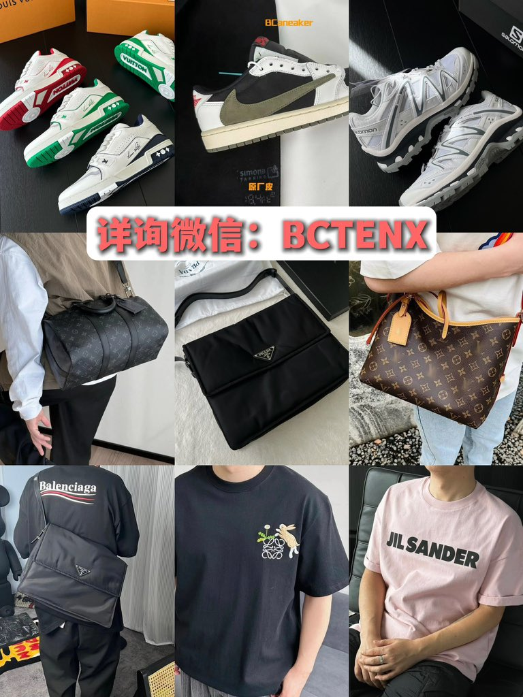

← 返回公开书架#1 · wufantouzi ·
富可敌国的google
4000亿美金营收
1300亿美金利润
在ai这波加持下
考虑2020年疫情之后释放的货币
大企业们的身价天花板都加了一个0
我上大学的时候
茅台已经千亿市值
利润接近百亿了
那时候的我根本不敢想象
茅台还能再涨10倍
就像我们今天看谷歌一样
但茅台现在一年的利润就是当年的市值
相信成长行业
他是整个人类社会发展的beta
ai 机器人 稳定币都是如此
十几年后你回头看彼时的利润
就是今天此时的市值
十年后我等你们回来考古
今日crcl市值136亿美金
#2 · Loners16888 ·
我还有多少个十年？今年29啦，月月工资拿出7成来梭哈Circle，只准备定投3年，三年后赚的钱去娶妻生子
#3 · wufantouzi ·
#4 · YingeAI ·
#5 · SwiftChibest ·
This is an interesting stat
#6 · Thousandcoin_U ·
#7 · BTCzcv ·
#8 · Don24084897 ·
很多人看午饭老师喊单crcl，要么fomo无脑梭，要么觉得太笃定就开始黑。却没看到：1.他看好crcl标的是有逻辑的。2.他的投资风格和他当初投资的tsla一样，也确实拿到过结果。3.他是有25%的风控和仓位管理的。所以午饭虽然喊得有点激进，却自始至终都是自洽的。
#9 · wl4d5s ·
这玩意其实就是个支付工具，只不过是币圈出来的才吸引到大家关注，天花板就是paypal
#10 · Kevin29404012 ·
以为你要奶一口科技股，最后吹回circle会不会有点搞笑
#11 · shenle55 ·
#12 · tothemoonjustin ·
近一年的百倍的半导体， 存储概念，你都预测不了，，怎么就能预测10年呢。。因为10年没人验证。。随便说。。哈哈哈
#13 · liujuan0523 ·
time store 怎么老是打不开呀，开没开地址都是一样，求助！
#14 · iijk9992727 ·
#15 · Leecaool ·
从微博到推特，关注你之前5年了，原来觉得还是挺有内容的博主，我们这些韭菜，散户能从你的内容中学习也好，借鉴也好，哪怕你喊单也好，这几个月不知道是在干什么，让不明白发生什么的我都觉得你像蹭热点一样，或者说是下作，取关了，有点恶心了。
#16 · TerryLWright ·
国内为数不多，真正的原版开发
11年从业经验，积累众多渠道源材资源
只出精品，无忧售后！

#17 · ying_hu94065 ·
午饭老师，目前bit交易所支持股票交易，在bit买crcl是不是一样有分红拿到派息？
#18 · GenesisFitzhugh ·
#19 · lixing_rational ·
#20 · wd58808619 ·
#21 · tingtingyang003 ·
#22 · waixingren121 ·
午饭兄time安卓版APP没办法更新了，给官网邮箱发邮件直接退回，官网也没有下载链接？
#23 · immutConstant ·
#24 · SQ_CRCL ·
同样一只股票，不同的人看到不同的故事，这就是投资市场有趣的地方。
坚定持有circle！计划至少10年。
#25 · 0xjack007 ·
USDC市值已经冲到730亿美金，CRCL才136亿。稳定币就是下一个万亿赛道，这估值是白菜价。
#26 · aBbeGGnEl2OxaAs ·
午饭老师 你想过一个问题没 为啥在离岸美元这个稳定币最大的应用市场 usdc根本干不过usdt
#27 · web3_Chalice ·
其实真正的复利不是价格，是“生产力被重新定价”的趋势。
#28 · sawzhang_ ·
说白了还是没搞清楚自己在赌什么，我也是。技术能看懂几个点，市场情绪这东西真玩不转。
#29 · barragan000 ·
逻辑矛盾。既然判断btc跌。那crcl同样跌。叫别人这个位置进入 适合居心
#30 · vesisjdodos ·
#31 · haokeran ·
周末愉快，兄弟们，
Quote
A lot of bros are all showing off getting paid by Musk @elonmusk
This is what you deserve after your hard work, no matter how much or how little, it's all good
Lately I've started feeling both the desire to express myself and the urge to tweet
Work hard and strive so that in a
#32 · 0nebcher ·
#33 · hl210075744 ·
#34 · Discipline13579 ·
#35 · catherineli012 ·
#36 · Qike68 ·
#37 · wanfeng16 ·
#38 · manbunmo ·
#39 · wuweizi2018 ·
谷歌这4000亿营收、1300亿利润，AI加持下确实像加了个0的天花板。
2020后放水把大厂身价集体抬高一个量级，现在看谷歌的利润规模，十年后回头再看今天的市值，可能就跟当年看茅台一样：茅台当年千亿市值、百亿利润，现在一年利润就顶当年市值。成长行业就是人类社会的beta，AI、机器人、稳定币都是。
Show more